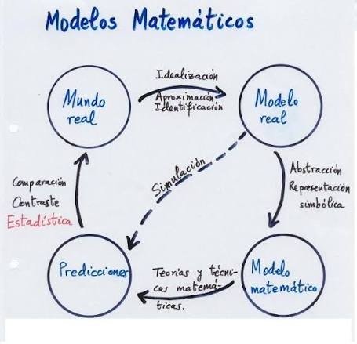

Introduccion a las Ecuaciones Diferenciales

| Aspecto | Tipos | Descripcion |
|---|---|---|
| Tipo | Ordinaria (EDO) | Derivadas ordinarias, una sola variable independiente |
| Parcial (EDP) | Derivadas parciales, dos o mas variables independientes | |
| Orden | 1°, 2°, 3°... | Determinado por la derivada de mayor grado |
| Grado | 1, 2, 3... | Potencia de la derivada de mayor orden |
| Linealidad | Lineal | Funcion y derivadas en primer grado, sin productos entre ellas |
| No lineal | Cualquier otra forma |
Conceptos clave:
• Solucion general: Familia de curvas que satisfacen la ecuacion (contiene constantes arbitrarias).
• Solucion particular: Curva especifica obtenida al asignar valores a las constantes.
• Campo de direcciones: Representacion grafica de las pendientes de las soluciones en el plano.


| Componente | Descripcion | Ejemplo |
|---|---|---|
| Ecuacion diferencial | Relacion entre la funcion y sus derivadas | dy/dx = f(x, y) |
| Condicion inicial | Valor conocido de la funcion en un punto | y(x0) = y0 |
| Teorema de Picard-Lindelof | Garantiza existencia y unicidad de la solucion | Requiere continuidad de f y ∂f/∂y |
| Interpretacion geometrica | Seleccionar una curva del campo de direcciones | Curva que pasa por (x0, y0) |

Teorema de existencia y unicidad: Si f(x, y) y ∂f/∂y son continuas en una region que contiene al punto (x0, y0), entonces existe una unica solucion del PVI en algun intervalo alrededor de x0.
| Etapas del Modelado | Descripcion |
|---|---|
| 1. Identificacion | Reconocer variables y parametros relevantes del fenomeno |
| 2. Hipotesis | Establecer simplificaciones y supuestos del modelo |
| 3. Formulacion | Construir la ecuacion diferencial que describe el fenomeno |
| 4. Resolucion | Obtener la solucion analitica o numerica |
| 5. Validacion | Comparar resultados con datos experimentales o reales |
| 6. Interpretacion | Analizar el significado de la solucion en el contexto original |

| Area | Fenomeno Modelado | Ecuacion Tipica |
|---|---|---|
| Fisica | Ley de enfriamiento de Newton | dT/dt = -k(T - Ta) |
| Fisica | Circuitos RC/RL | dQ/dt + Q/RC = E/R |
| Biologia | Crecimiento poblacional | dP/dt = kP |
| Biologia | Modelo logistico | dP/dt = kP(1 - P/M) |
| Epidemiologia | Propagacion de enfermedades | Modelos SIR |
| Educacion | Contextualizacion didactica | Adaptaciones de modelos fisicos |
| Competencia | Descripcion |
|---|---|
| Resolucion contextualizada | Aplicar metodos de solucion a situaciones reales de distintas areas |
| Analisis critico | Evaluar si los resultados obtenidos son razonables frente al fenomeno modelado |
| Elaboracion de modelos propios | Construir esquemas y ecuaciones a partir de descripciones de situaciones problema |
| Comunicacion de resultados | Expresar conclusiones del modelo en lenguaje comprensible para el contexto educativo |
Habilidades desarrolladas:
• Identificar variables y relaciones en un fenomeno dado
• Formular ecuaciones diferenciales a partir de enunciados
• Resolver y verificar soluciones
• Interpretar el significado fisico o contextual de las constantes y funciones obtenidas